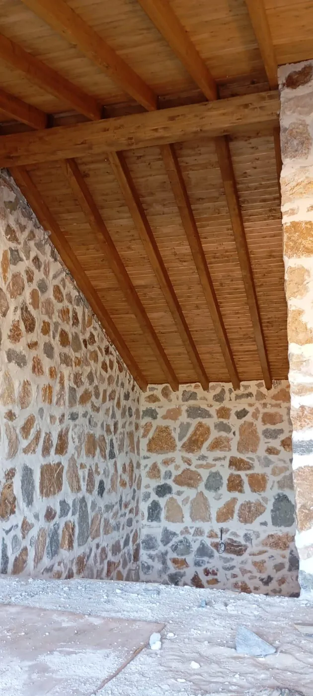
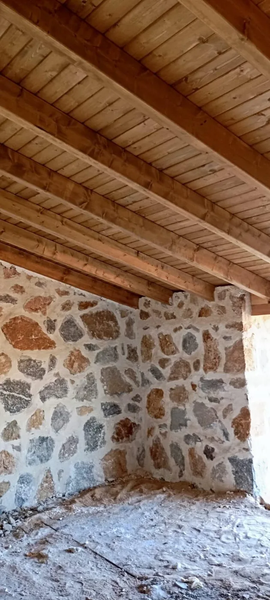
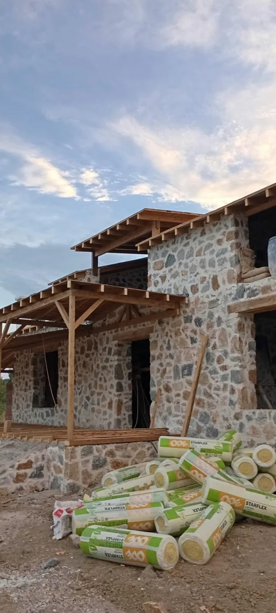
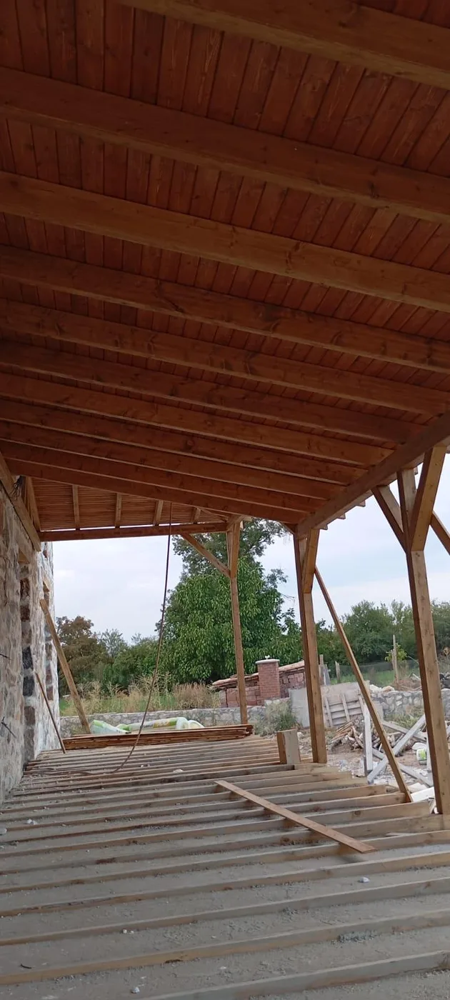

Betonarme Yapı & Lüks Villa İnşaatı:
Neyi Nasıl Yapıyoruz?
Arsanızın topoğrafyası ve zemin etüdünden başlayarak, statik projelendirme, C30/C35 hazır betonarme radye temel, karkas taşıyıcı iskelet, ileri izolasyon ve anahtar teslim ince işçilikle depreme tam dayanıklı kalıcı yaşam alanları inşa ediyoruz.
Ne Yapıyoruz?
Geleneksel betonarme sağlamlığını, çağdaş mimarlık ilkeleri ve sözleşmeli kurumsal mühendislik güvencesiyle birleştiriyoruz.
Müstakil Lüks Betonarme Villalar
Arsanızın manzarasına, güneş açısına ve imar durumuna özel projelendirilmiş; modern geniş cam cepheli, çift katlı veya tek katlı lüks betonarme konutlar inşa ediyoruz.
Doğal Taş & Ege Mimarisi Konutlar
Alaçatı, Urla ve Seferihisar taş işçiliğini taşıyıcı betonarme karkas sistemle buluşturuyor; yaz kış yüksek ısı konforu sunan otantik taş villalar üretiyoruz.
Radye Temel & Subasman Taahhüdü
Çelik ve prefabrik evlerinizin veya bağımsız yapılarınızın zemin kazısı, perde beton, taş istinat duvarları ve radye jeneral temel işlerini mühendislik hassasiyetiyle döküyoruz.
Hibrit Sistemler (Beton + Çelik)
Zemin katı ağır betonarme karkas ve taş istinat kaidesi, üst katı veya çatı katı ise yüksek izolasyonlu hafif çelik konstrüksiyon olan modern hibrit villalar tasarlıyoruz.
Betonarme & Taş Yapı Şantiyelerimizden Kareler
Temel kazısından taş örümüne, masif tavan kirişlerinden anahtar teslim iskana kadar bizzat sahada inşa ettiğimiz gerçek aşamalar:








Nasıl Yapıyoruz? (8 Adımda Anahtar Teslim)
Şantiyede rastlantılara yer bırakmıyoruz. Her etabımız ulusal yapı denetim ve laboratuvar onaylarıyla kayıt altına alınır.
Arsa Zemin Etüdü & İmar / Çap Analizi
İnşaata başlamadan önce arsanızın jeolojik yapısını inceliyor, sondaj çalışmalarını yaptırarak zemin emniyet gerilmesini ve sismik zemin sınıfını (ZA, ZB, ZC vb.) netleştiriyoruz. İlgili belediyeden imar durumu belgesi (çap), kot krokisi ve yol kotları çıkarılarak arsanın net inşaat taban oturumu belirlenir.
Mimari Tasarım & 3D Fotogerçekçi Görselleştirme
İhtiyaçlarınıza uygun oda dağılımı, salon-mutfak yerleşimi, veranda ve bahçe ilişkileri mimarlarımız tarafından planlanır. Daha temel kazılmadan önce evinizin bitmiş halini, malzeme dokularını ve ışık açılarını 3 boyutlu fotogerçekçi renderlarla görerek onaylarsınız.
Statik Mukavemet Hesapları & Yapı Ruhsatı
En son yürürlükteki Türkiye Bina Deprem Yönetmeliği (TBDY 2018) kriterlerine göre bilgisayar destekli statik, betonarme donatı, elektrik ve mekanik tesisat projeleri hazırlanır. İlgili yapı denetim firması ve belediye onayları tamamlanarak yasal inşaat ruhsatı alınır.
Hafriyat, Grobeton & Çift Hasır Radye Jeneral Temel
Ekskavatör ile sağlam zemine inilerek temel kazısı yapılır. Blokaj ve sıkıştırma işleminden sonra grobeton serilir. Zemin su yalıtımı için bitümlü membran veya sürme izolasyon uygulanır. Ardından B420C nervürlü donatı demirleri çift sıra halinde örülür ve akredite hazır beton tesisinden temin edilen C30 veya C35 sınıfı hazır beton mikser ve pompa ile tek seferde dökülür.
Kolon, Kiriş, Perde ve Döşeme Karkas İskeleti
Kalıp ustalarımız tarafından pürüzsüz endüstriyel kalıplar kurulur, kolon ve perde demirleri projeye milimetrik uygunlukta bağlanır. Beton dökümü sırasında vibratör ile homojen sıkıştırma sağlanır; boşluk ve hava kabarcığı oluşması engellenir. Dökülen her betondan bağımsız yapı denetim laboratuvarı tarafından silindir numuneler alınarak 7 ve 28 günlük basınç dayanım testleri (kırım raporları) arşivlenir.
Bims / Gazbeton Duvarlar ve Yüksek Isı-Ses İzolasyonu
Kaba karkas tamamlandıktan sonra dış ve iç bölme duvarlar yüksek ısı yalıtım katsayısına sahip bims bloklar veya gazbeton ile örülür. Dış cephede yüksek yoğunluklu taşyünü mantolama uygulanarak A sınıfı enerji verimliliği sağlanır. Subasman çevrelerine, banyolara ve açık teraslara çift kat çimento-polimer esaslı sürme su yalıtımı ve fileli koruma katmanı çekilir.
Çatı Konstrüksiyonu, Doğramalar ve Tesisat Altyapısı
Kırma beşik veya teras çatı sistemlerinde su ve ısı buhar bariyerleri, OSB altı membran ve kiremit/shingle örtü montajı yapılır. Elektrik kablolaması halogen-free borularla, sıhhi tesisat sessiz borularla çekilir; opsiyonel yerden ısıtma boruları döşenir. Dış cephede 4+16+4 mm ısıcamlı Isı Yalıtımlı Alüminyum veya 70'lik seri PVC doğramalar monte edilir.
İnce İşçilik, Yapı Denetim Onayı & Anahtar Teslim İskan
İç mekanlarda makine alçı sıvası, saten boya, birinci sınıf porselen seramikler, lake iç kapılar, granit mutfak tezgahı ve vitrifiyeler monte edilir. Belediye fen işleri ve yapı denetim heyetinin son muayenesiyle Yapı Kullanma İzin Belgesi (İskan) alınarak mülkünüz sözleşmede taahhüt edilen sabit bedelle, eksiksiz olarak kullanımınıza teslim edilir.
Prefabrik & Çelik Ev Modellerimizi İncelemek İster Misiniz?
Eğer daha hızlı montaj süresi, fabrikasyon üretim hassasiyeti ve avantajlı maliyet seçeneklerini değerlendirmek isterseniz; 50'den fazla hazır hafif çelik villa ve prefabrik konut modelimizi inceleyebilirsiniz.